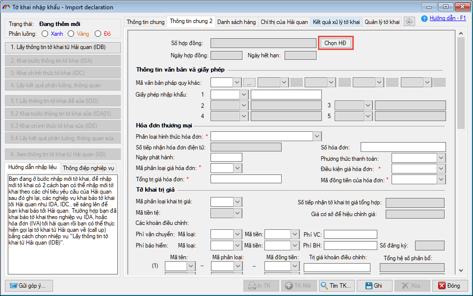
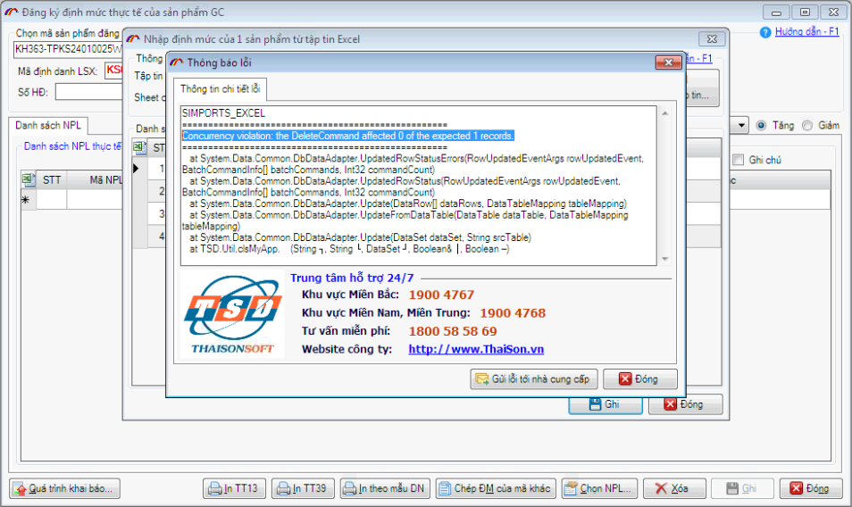
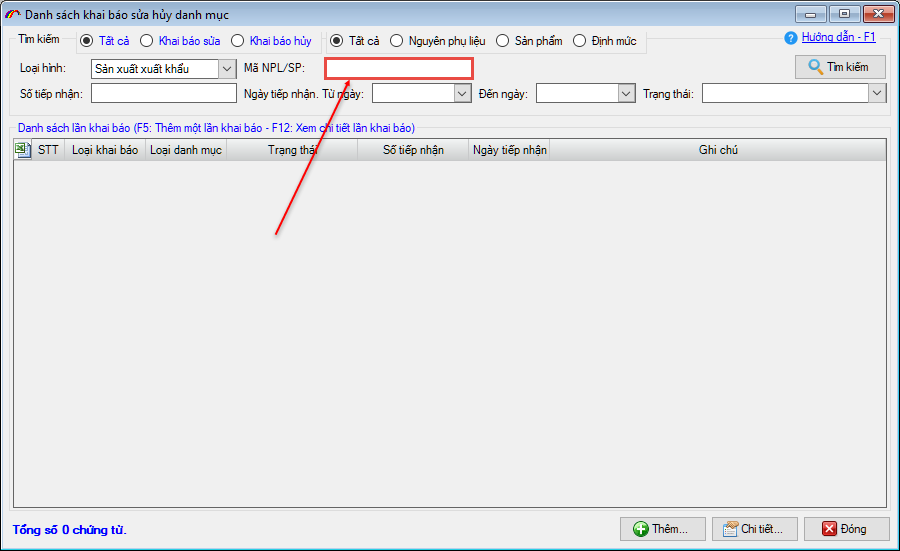
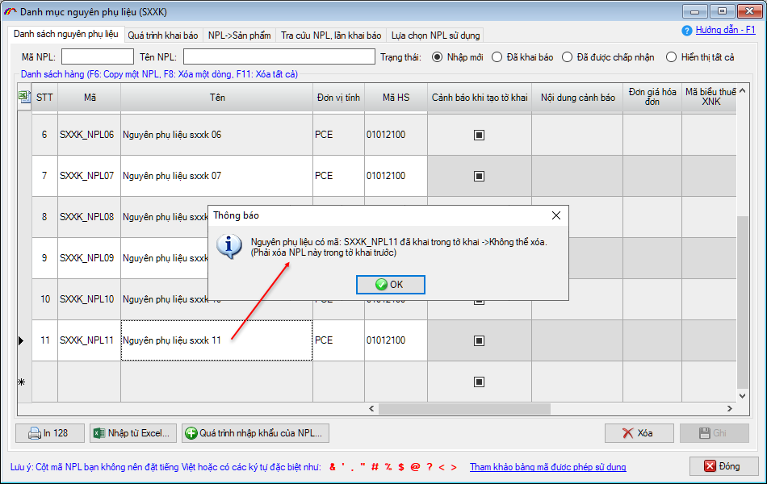
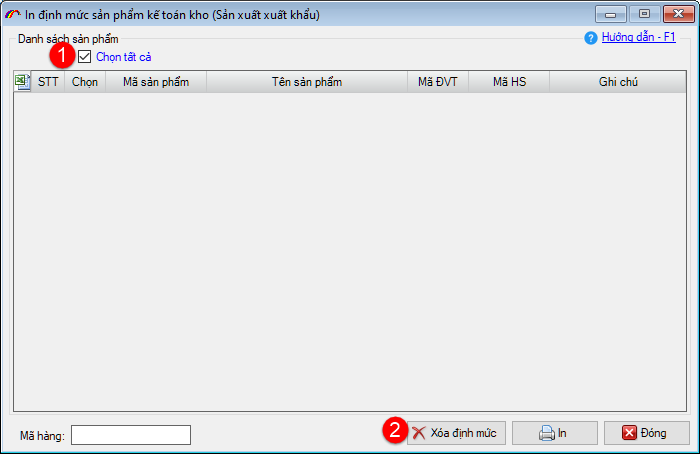

NHỮNG THAY ĐỔI TRÊN BẢN ECUS5VNACCS 2018
(Phiên bản update 28/03/2024)
Phần mềm ECUS5VNACCS2018 - Ngày phát hành 03/04/2024
Phiên bản cập nhật ngày 28/03/2024 được phát hành ngày 03/04/2024 sửa đổi bổ sung một số chức năng, nhằm tăng hiệu suất phần mềm. Các chức năng được sửa đổi, bổ sung cụ thể như phần chi tiết dưới đây:
- 1. Ẩn nút Chọn hợp đồng gia công khi tờ khai đã khai báo.
Ở bản nâng cấp này, phần mềm sẽ ẩn nút Chọn HĐ (nút chọn hợp đồng gia công của tờ khai loại hình Gia công) khi trạng thái tờ khai khác Nhập mới:

- 2. Sửa lỗi chức năng Import định mức gia công
Doanh nghiệp sử dụng mô hình máy chủ - máy trạm, khi 2 máy cùng thực hiện chức năng Import định mức gia công (F12) cho các sản phẩm khác nhau, phần mềm sẽ đưa ra thông báo lỗi (Lỗi đã được khắc phục ở bản cập nhật này):

- 3. Sửa lỗi đối với trường hợp mã biểu thuế B30
Tình trạng lỗi ở bản cũ:
- Tờ khai có nhiều dòng hàng, khi người dùng chọn mã biểu thuế NK là B30 ở dòng phía trên, phần mềm sẽ hỏi bạn có muốn sửa biểu thuế các dòng còn lại hay không? Nếu chọn No, thì phần mềm đang không tự động điền TS NK(%) = 0 cho dòng hàng đang chọn mã biểu thuế NK B30.
- Trước đó doanh nghiệp chọn biểu thuế là B30, sau đó sửa lại sang mã biểu thuế khác. Khi chọn No để không sửa các dòng còn lại, thì phần mềm chưa xóa giá trị TS NK (%) =0 cho dòng hàng vừa thay đổi mã biểu thuế.
Tình trạng thay đổi ở bản nâng cấp mới:
- Trường hợp 1, phần mềm sẽ tự động thêm Thuế suất NK (%) = 0 cho dòng hàng đang chọn mã biểu thuế B30.
- Trường hợp 2, phần mềm sẽ tự động xóa Thuế suất NK (%) về NULL đối với dòng hàng chuyển mã biểu thuế NK từ B30 sang mã biểu thuế khác.
- 4. Bổ sung điều kiện tìm kiếm cho danh sách khai báo sửa, hủy danh mục, định mức.
Phần mềm bổ sung thêm điều kiện tìm kiếm theo mã Nguyên phụ liệu hoặc sản phẩm, doanh nghiệp sẽ dễ dàng tìm kiếm ra lần khai báo sửa / hủy liên quan.

- 5. Bổ sung kiểm tra, cảnh báo khi xóa Nguyên phụ liệu, sản phẩm SXXK.
Khắc phục tình trạng người dùng nhấn phím F8 để xóa nguyên phụ liệu hoặc sản phẩm trong danh mục, trong khi các nguyên liệu, sản phẩm này đã tham gia tờ khai. Ở bản nâng cấp này, phần mềm sẽ kiểm tra nếu nguyên liệu, sản phẩm đã tham gia tờ khai, định mức, khi người dùng xóa sẽ đưa ra thông báo cảnh báo và không cho phép xóa:

- 6. Sửa đổi chức năng báo cáo tạm nhập tái xuất.
Bản nâng cấp này khắc phục tình huống doanh nghiệp mở tờ khai G61 (tạm xuất hàng đi), sau đó mở tờ khai B12 (chuyển đổi mục đích sử dụng cho tờ G61). Nhưng trong phần Báo cáo xuất nhập tồn hàng TN-TX thì lượng của tờ khai G61 không tự động trừ đi.
- 7. Bổ sung nút "Xóa nhiều định mức".
Bổ sung nút "Xóa định mức" và lựa chọn chọn nhiều định mức để xóa ở form In nhiều định mức của chức năng Kế toán kho, cho cả 3 loại hình Gia công, SXXK và Chế xuất.

- 8. Cùng nhiều chức năng, tiện ích khác nhằm nâng cao hiệu suất chương trình...
Bản quyền © thuộc về Công ty TNHH Phát triển công nghệ Thái Sơn